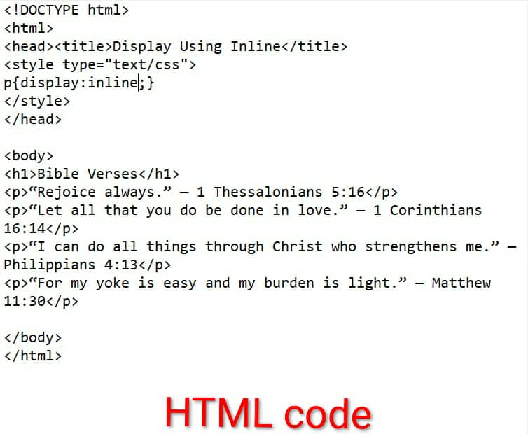

Name: Taranee Rodelyn A. Guevarra Age: 15 years old Birthday: February 09, 2010
Favorites:
Watching Kdramas
Demon Slayer
Spicy Foods
Hanging Out with Friends
Sleeping
Origami
Circle of Friends
I met most of my friends back in 7th grade, then some in 8th grade, and then 9th too. Our hangouts are often during Fridays, because the following days would not be a school day, for it is weekend. If not, we would hangout during last day of examination, so that we could have a worry-free and stress-free hangout. When we are all swamped with schoolworks, or what we call "hell week", the only hangout we'll get to have is inside the school. Every lunch time, or after school hours. Except from Kiel Reyes and Ezekiel Aguilar, who are in another section, we always eat together during breaks.
If I could choose my favorite moment with them, my choice would be when we are having deep, serious conversations. This usually happens at Kiel Reyes' house, when we visit him. The hangout would always start lightly, by telling each other how they've been lately, and even playing games with each other. Then the next minute, everyone's sharing their problems, burdens they've been carrying, and emotions they've been supressing. When someone is speaking, the rest just listens and symphatizes. I really love our moments like this, because it reminds me how great my friends are. I'm not usually the type to open up to others regarding my feelings and problems, because I don't want to be judged, but when I'm with them everything just feels so light. It feels like I can tell them all my worries, and that they would never judge me. Though I'm not sure if we will stay together for a long time, I would still always be grateful that they became a part of my life, and that at some point they became my safe space.
My Family
Members:
Mother: Maricel T. Atienza
Father: Arnel O. Guevarra
Older Brother: Markus Liam A. Guevarra
Youngest: Taranee Rodelyn A. Guevarra (Me!)
Overview:
My mom is currently in Dubai, working as a housekeeper and nanny. As for my father, he is currently working as a construction worker. Lastly, my brother is a first year senior high school student.
Characteristics:
If I could describe my family, I would say that they are very caring. Even if they are no longer together, my parents both try to give their best when it comes to providing for us, and they both love my brother and I. And while they do care a lot for us, they also know that there are limits and boundaries that they have to watch out for and make sure, they don't cross it. That way, everyone's happy. But we weren't like this before. Back then, all you would hear from our house were two loud voices yelling at each other, cursing, things getting thrown across the room, and children crying. It only started to get better when my mom decided to work abroad to support my brother and I's needs. Then after a few years decided to end things with my father for good. However, what's ironic is that, despite not being together anymore, my father still lives with us in the same house. Although, not directly with us, because he lives on the 3rd floor (where we all used to live), while my brother and I lives on the 1st floor with my grandma and aunt, and some cousins.
My father and I still talk, but not usually. He usually refrains from calling out to me, because he knows how much schoolworks I have to constantly do. i'm really grateful that he now gives me more space and time alone. The same thing also goes for my mom and brother.
TLE - ICT
TLE-ICT Contents (Outputs per Lesson)
Lesson 1: What is CSS
a. Browser Output
1.
2.
b. What I have Learned:
For the first lesson, I mainly learned what CSS is, and why it is good to use it. CSS is mainly used for designing web pages. It is very efficient to use too because, you can simultaneously design multiple webpages using only one CSS file. To put it simply, it does not only help us design our webpage and make it more visually appealing, but also hassle-free, and time-saving.
Lesson 2: Structure and Kinds of CSS
a. Browser Output
2.1
2.2
3.1
3.2
4.1
4.2
4.3
b. What I Have Learned
In grades 7 and 8, I only knew about inline CSS, however, with this lesson, I was able to find out and learn about the 2 other kinds of CSS, which is the Embedded, and the External. For me, it is much convenient to use inline when working with only one webpage. That way, I wouldn't need to switch between different text files, and just input the codes directly into the same text file while also inputting the content. As for embedded, I think it is much applicable to use it when working only one but long webpage. Because with embedded, you can implement design to multiple selectors with only one declaration if you're going for a similar design for each of those elements. It is also hassle-free, because it is only placed within the
tag. Lastly, for external. I find using external better to use when working with multiple webapge. Because with external CSS, I can use a single CSS file to style multiple webpages. Additionally, it is more oraganized to use, because it won't get mixed up with the codes that are solely for the structure. Therefore, you can easily spot and edit if there are errors, or if there are changes that you want to apply to you page design.
Lesson 3: CSS Elements
a. Browser Output:
3.1
3.2
4.1
4.2
5.1
5.2
6.1
6.2
b. What I have Learned:
The elements related to CSS includes:
Display Property
allows you to control how an element is displayed
Block Level Element
These are the elements that stack vertically, and take up as much horizontal space as possible.
Inline Level Element
These elements display in a line, and do not force the text after them to a new line.
Div Tag
This tag divides the contents of a web page into individual sections; a block element.
Span Tag
This is applied to an inline element, and is used to emphasize words or sentences within a paragraph
This lessons, I was able to gain a deeper understanding about CSS. Although they are not related to CSS only, knowing about them truly helped me know more about CSS. Instead of just mindlessly using CSS to design webpages, I get to learn about the other things that help make CSS work efficiently too.
Lesson 4: CSS Rule
a. Browser Output:
4.1
4.2
b. What I have learned
With this lesson, I learned about the CSS rule, which consists of a selector and list of style declarations. Similar to the previous lesson, this helped me realize that I've actually been using CSS for quite some time now, while still not knowing about even the basic things about it. I'm not sure if I've already known about this in other grade levels, but if we did, then I probably just forgot. If I did, then I am more grateful now, that I finally had the chance to learn about them. I only knew that CSS was used to design web pages, and I only knew the codes used in styling webpages with CSS as 'codes', collectively. I wasn't aware that each part of those codes actually have a name. Thanks to this lesson, I once again gained a deeper understanding and knowledge about CSS. I just hope that this time, it stays with me, and that I won't forget it so quickly.
Lesson 5: CSS Selectors
a. Browser Output:
5.1
5.2
b. What I Have Learned
One of the first things that I learned here is what CSS selectors are. Basically, these are used to "find" or "select" the HTML elements that you want to style, hence the name 'CSS Selectors'. CSS selectors have 6 division, and these are:
Class Selector
This is used when you want to apply the same style to multiple elements or when elements share a common category or purpose.
Element Selector or Tag Selector
This can be used when you want to style all occurences of a soecific HTML tag.
ID Selector
This is used when styling a unique element that appears only once on a page, like a header, footer, or main section.
Universal Selector
This is used when you want to style all elements on the page.
Group Selector
This is used to avoid repeating code when different elements share the same styling.
Attribute Selector
This is used when you want to style elements based on their HTML elements or attribute.
Lesson 6: Setting Dimensions
a. Browser Output:
6.1
6.2
b. What I Have Learned:
For this lesson, I have learned all the many properties that I can use in CSS to add dimension to my web page. These includes:
Visibility
Width
Height
Line-Height
Max-Height
Min-Height
Max-Width
Min-Width
Aside from these, I also learned about Pseudo Classes and Links. Pseudo-Classes are defined by a colon and are not user-defined.
Specific pseudo-classes can be used on specific HTML elements only. The anchor element has four pseudo-classes:
link
-for hyperlinks that are have not yet been visited
visited
-for visited hyperlinks
hover
-for hyperlinks when the mouse is hovered over them
active
-for hyperlinks that are clicked
TLE-ICT Contents (Second Quarter School Activities)
Reflection for Each Event:
Buwan ng Wika
During the Buwan ng Wika, with the theme, "Paglinang sa Filipino at Katutubong Wika: Makasaysayan sa Pagkakaisa ng Bansa", I learned the importance of learning about our country, particularly with our language. Through the celebration, it also helped me appreciate the language of the indigineous people. To apply what I learned during the ceelbration in real-life, I promised myself that I will never forget to use the Filipino language. Even if English is recognized as a universal language, meaning that it is very important to know how to speak and understand English clearly and correctly, I will make sure that I will always remember to use our language clearly, and correctly. Especially now that so much Filipino slangs and acronyms become widely-known and used, I will make sure that I still know the actual correct way of using the language.Like, using the correct grammar and sentence structure. During the celebration, I was able to somewhat show my cooperation and participation by wearing a filipiniana every Monday. I also believe that by actively singing the Lupang Hinirang every flag ceremony is another way of showing my support to the celebration. If I were to share this topic with a classmate, I would probably share it in a way that would help them realize that there are many benefits of knowing different languages, but nothing can compare to the honor and pride that having your own country's language and using it confidently, and appropriately brings to one. Lastly, this event held such important regards, because I think that the youth nowadays are actually starting to forget their roots. They start to lean more with common slangs, some say to fit in, while some does just because they feel like it. Celebrations like this can help rekindle the people's patriotism and love for their own culture, particularly our language.
Intramurals
During the Intramurals, I had so much fun. I don't think I've ever had a much enjoyable and amazing intramurals ever. Perhaps it was because I can actually enjoy the games, due to the fact that we've already discussed most of the sports played in Intrams on MAPEH. Because of this, I can tell whether our team is actually winning, or if any of the players have done a violation, and if the scoring is correct. But, much importantly, I enjoyed this year's Intramurals because I learned the importance of camaraderie, and sportsmanship. I think I'll be able to apply these learnings in different aspects of my life. If in the future, I ever decide to join and play a sport too. I can use these to make sure that I actually have fun while playing, instead of playing solely to win, and not minding the process. If I were to share this to a classmate, I would tell them that in sports, while victory does bring great joy and sense of accomplishment, it is also important that you enjoy the process. Because if you only focus on the outcome, then you will easily be let down the moment you encounter failure. I think it's important to have this event because it helps hone the students' sports ability, and let them have fun every once in a while to let them have a break from all the schoolworks and possibly, personal problems.
Science Month
This Science Month, I learned a lot, especially with the WINS Corner. During the WINS, our cooperation and connection as whole section was once again tested. I was also able to hone my knowledge reagrding Science because of the Quiz Bee. Though I wasn't chosen as the representative, I still had fun answering it. I can apply these in the future, when we have this as a lesson in science. If I am going to share this with a classmate. I would tell them how important Science is in our life. I will tell them how through it, we are able to live as comfortably as we do right now, because there would be no inventions. Lastly, I think that celebrating this was important because this allowed the students to explore their potentials related to Science, and it also gave room for possible innovations and inventions.
AP Month
The most important thing that I learned from this celebration was what was discussed from the Maritime limits and Borderlines seminar. Though there are many parts that I already forgot, and there are also certain parts where I wasn't able to fully understand, I really find it memorable as it was truly a new knowledge for me. It was already my second time attending this seminar, but I was able to learn new things again. I believe that what I learned from the seminar will be very helpful to me especially in defining my political view or perspective. If I were going to share this to a classmate, I would've told them that it is only right and just to fight for what is ours. The issue regarding the West Philippine Sea, is still going, so it's very imporatant that we learn about the borders and limits of our maritime teritories. I belive that the celenration of AP month is very important, because it does not only remind us of our past, but it also reminds us to think about aur future and to pay attention to what is happening everyday around us.
Teacher's Day
This year's teacher's day was truly memorable. During the past celebrations of Teacher's day, I've never cried. I did appreciate my former teachers a lot, but this year's celebration actually made me cry. I don't know if it was the teacher's messages that made me cry, or the part when we all sang for them, and they just started crying while watching us. Whichever it was, there's one thing I'm sure of. That is that teachers are truly a great blessing. As someone who grew up with both parents, not always with me, I often have no one to rely on when I have problems. So, I usually ends up keeping it to myself, suppressing it. But thanks to my teachers, I am constantly receiving free life lessons, and sometimes they even know that I'm going through something without me having to tell them. I apply all these lessons by always striving to be a better version of me. If I were to share this topic with a classmate. I would start by telling them how important teachers are in our life. They not only teach us the skills and knowledge that we need to move up in life, but they also become a safe space where we can tell our problems, and they'll be willing to help without asking for anything in return, and with no judgment. Although there are times when we get scolded by them, we should always keep in mind that these scoldings are actually for us. For us to be better, for us to not repeat the same mistakes, and for us to not do something that will do nothing other than harm us and hold us back. So, if you get scolded, don't immediately hate them, instead think and reflect. Why did they scold you? Would they have scolded you if you did nothing wrong? No, right? Therefore, they never meant us harm even during their fits of anger. Because at the end of the day, everything that they do and say to us actually help shape us and grow into the person we are meant to be and reach our full potential. I believe that having a Teacher's Day celebration is a really great thing. Teachers have to face students, and teach students everyday, so dedicating a day to them for everyhing they have done is the only right thing to do. A great example of this is what Ms. Shen told us during the celebration. She said that since she hasn't been teaching for a while, she was already starting to doubt and question herself. She said that it constantly bothered her because she felt that she was no longer fit to be called a teacher, because she only stays in the guidance office and no longer teaches. So, when she was part of our classroom celebration for teachers, it really moved her. She couldn't help but cry, and thank us nonstop. I think this is also one of the reasons why I cried so much that day. I always saw Ms. Shen as a brave, and inspiring person for not giving up despite everything she's been through. So, knowing that she was doubting herself lately really made me cry. Because I never would've thought that a person who is smiling and helping guide students by counseling them at the guidance office is actually feeling so down inside.
Araling Panlipunan
Lesson 1 - Demand
tumutukoy sa dami ng produkto o serbisyo na gusto at kayang bilhinng mga mamimili sa isang takdang presyo at partikular na panahon.
kakayahan at kagustuhan ng tao na mabili ang kanilang pangangailangan.
Batas ng Demand
-Ayon sa batas na ito, mayroong magkasalungat (inverse) na ugnayan ang presyo sa quantity demanded ng isang produkto.
-kapag tumaas ang presyo, bumababa ang dami ng gusto at kayang bilihin, at kapag bumababa ang presyo, tataas naman ang dami ng gusto at kayang bilihin.
Ceteris Paribus
-Ipinagpapalagay na ang presyo lamang ang salik na nakaaapekto sa pagbabago ng quantity demanded, habang ang ibang salik ay hindi nagbabago o nakaaapekto rito.
Bakit Magkasalungat ang Ugnayan ng Presyo at Quantity Demanded?
Ito ay dahil sa dalawang salik na ito:
Substitution Effect
Income Effect
Substitution Effect
-Kapag tumataas ang presyo ng isang produkto, hahanap ang konsyumer ng pamalit na mas mura.
Income Effect
-Ipinapahayag dito na mas malaki ang halaga ng kinikita ng isang indibidwal kapag mas mababa ang presyo.
Mga Maaaring Representasyon ng Demand
Demand Function
-Ito ay matematikong pagpapakita sa ugnayan ng presyo at quantity demanded (Qd).
-Ito ay inrerepresanta ng isang equation: Qd=a-bP. Kung saan ang:
Qd
-dami ng demand
a
-dami ng demand kung ang presyo ay zero (horizontal intercept)
(-b)
-slope ng demand function
P
-presyo
Demand Schedule
-Ito ay isang talaan na nagpapakita ng dami na kaya at gustong bilihin ng mga konsyumer sa iba't-ibang presyo.
Demand Curve
-Ito ay ang grapikong paglalarawan na nagpapakita ng magkasalungat na relasyon sa pagitan ng presyo ng isang produkto at quantity demanded para rito.
Iba pang Salik na Nakaaapekto sa Demand Maliban sa Presyo
Kita
Panlasa
Dami ng Mamimili
Presyo ng magkaugnay na produkto sa pagkonsumo
Inaasahan ng mga mamimili na presyo sa hinaharap
Kita
-Sa pagtaas ng kita ng isang indibidwal ay tumataas din ang kanyang kakayahang bumili ng mas maraming produkto/serbisyo.
-Sa pagbaba ng kanyang kita, bumababa din ang kanyang kakayahan na bumili ng mga produkto/serbisyo.
Normal Goods
-tumataas ang demand para sa isang produkto kapag tumaas ang kita ng isang tao.
Inferior Goods
-ito ang mga produktong bumababa ang kita kapag tumataas ang kita ng isang tao
Panlasa (Taste/Preference)
-Kapag ang isang produkto o serbisyo ay naaayon sa iyong panlasa, maaaring tumaas ang demand mo para rito.
Dami ng Mamimili
-Ang bandwagon effect ay maaaring makapagpataas ng demand para sa isang produkto o serbisyo.
Presyo ng Magkakaugnay na Produkto
Komplementaryo (Complementary Goods)
-Ito ay ang mga produktong magkakasabay na ginagamit
Anumang pagbabago sa dpresyo kaugnay na produkto ay tiyak na may pagbabago sa demand ng komplementaryong produkto.
Pamalit (Substitute Goods)
-Ito ay mga produktong maaaring magkaroon ng alternatibo.
Inaasahan ng mga Mamimili sa Presyo sa Hinaharap
-Kung inaasahan ng mga mamimili na tataas ang presyo ng isang partikular na produkto sa mga susunod na araw, tataas ang demand para sa nasabing produkto sa kasalukuyan.
Shift ng Demand Curve
Ang pagtaas ng demand ay magdudulot ng paglipat ng kurba ng demand sa kanan.
Ang pagbaba ng demand ay magdudulot ng paglipat ng kurba ng demand sa kaliwa.
Lesson 2: Supply
Ang supply ay tumutukoy sa dami ng produkto o serbisyo na handa at kayang ipagbili ng mga prodyuser sa iba't-ibang presyo sa isang takdang panahon.
Batas ng Supply
-Isinasaad ng Batas ng Supply na mayroong direkta o positibong ugnayan ang presyo sa quantity supplied ng isang produkto.
-Kapag tumataas ang presyo, tumataas din ang dami ng produkto o serbisyo na handa at kayang ipagbili.
-Kapag bumababa ang presyo, bumababa rin ang dami ng produkto o serbisyo na handa at kayang ipagbili (ceteris paribus).
Mga Representasyon ng Supply
Supply Schedule
Higit na mauunawaan ang konsepto ng supply sa pamamagitan ng supply schedule. Ang supply schedule ay isang talaan na nagpapakita ng dami ng kaya at gustong ipagbili ng mga prodyuser sa iba't-ibang presyo.
Supply Curve
Ito ay isang grapikong paglalarawan ng ugnayan ng presyo at quantity supplied.
Paggalaw ng Supply Curve
Mangyayari ang paggalaw sa supply curve kung ang salik na nakaaapekto ay ang sariling presyo ng produkto na nagbabago.
Supply Function
Ang isa pang paraan ng pagpapakita ng ugnayan ng presyo at quantity supplied ay sa pamamagitan ng supply function.
Ang supply function ay ang matematikong pagpapakita ng ugnayan ng presyo at quantity supplied.Maaari itong ipakita sa equation sa ibaba:
Qs=f(P)
Qs
-Quantity Supplied at tumatayong dependent variable
(P)
-Presyo; Independent Variable
-Ang presyo ang nakapagpapabago sa dami ng handa at kayang ipagbili ng mga prodyuser.Isa pang paraan ng pagpapakita ng supply function ay sa equation na:
Qs= c+bP
Kung saan:
Qs
-nangangahulugang dami ng supply
P
-Presyo
c
-Intercept; ang bilang ng Qs kung ang presyo ay 0
b
-Slope
-Nagsasaad kung ang relasyon ng P at Qs ay positive o negative. Nagpapakita ang slope ng pagbabago sa dami ng supply sa bawat pisong pagbabago sa presyo.
Iba pang Salik na Nakaaapekto sa Supply Maliban sa Presyo
Paglipat ng Supply Curve sa Kanan
Ang pagtaas ng supply ay makapagdudulot ng paglipat ng kurba ng supply sa kanan. Mangyayari ang paglipat ng kurba ng supply sa kanan kung ang mga pagbabago ng salik na hindi presyo ay nakapagdudulot ng pagtaas ng supply.
Paglipat ng Supply Curve sa Kaliwa
Ang pagbaabng supply ay makapagdudulot ng paglipat ng kurba ng supply sa kaliwa.Mangyayari ang paglipat ng supply sa kaliwa kung ang pagbabago ng salik na hindi presyo ay nakapagdulot ng pagbaba ng supply.
Pagbabago sa Teknolohiya
Karaniwan na ang mga modernong teknolohiya ay nakatutulong sa mga prodyuser na makabuo ng mas maraming supply ng produkto. Dahil dito, maaaring bumaba ang halaga ng produksyon na lalong hihikayat sa mga prodyuser na dagdagan ang supply.
Pagbabago sa Halaga ng mga Salik sa Prosuksyon
Ang paggawa ng produkto ay nangangailangan ng iba't-ibang salik gaya ng lupa, paggawa, kapital, at entrepreneurship. Sa bawat pagtaas ng presyo ng anumang salik, mangangahulugan ito ng pagtaas sa kabuuang gastos ng produksyon kaya maaaring bumaba ang dami ng mga produkto o serbisyo na handa at kayang ipagbili ng prodyuser.
Sa kabilang banda, ang pagabba ng presyo ng alinmang salik ay magdudulot din ng pagbaba ng kabuuang gastos sa produksyon kaya't inaasahan ang pagdami ng supply.
Pagbabago sa Bilang ng mga Nagtitinda
Ang salik na ito ay maihahantulad din sa bandwagon effect sa demand. Kung ano ang mga nausong produkto ay nahihikayat ang mga prodyuser na mag prodyus at magtinda nito.
Pagbabago sa Presyo ng Kaugnay na Produkto
Ang mga pagbabago sa presyo ng isang produkto ay nakaaapekto sa quantity supplied ng mga produktong kaugnay nito.
Ekspektasyon ng Presyo
Kung inaaasahan ng mga prodyuser na tataas ang presyo ng kanilang produkto sa madaling panahon, may mga magtatago ng produkto upang maibenta ito sa mas mataas na presyo sa hinaharap. Ang kondisyong ito ay tinatawag na hoarding na nagbubunga ng pagbaba ng supply sa pamilihan.
Lesson 3: Price Elasticity
Ano ang Elasticity?
Ito ay tumutukoy sa bahagdan ng pagbabago sa dami ng demand o supply batay sa pagbabago sa presyo.
Ipinakilala ni Alfred Marshall ang konsepto ng elasticity sa ekonomiks.
Price Elasticity ng Demand
Tugon ng mamimili sa pagbago-bagong presyo ng mga produkto at serbisyo batay sa konsepto ng batas ng demand.
Ito ang paraan na ginagamit upang masukat ang pagtugon at kung gaano ang magiging pagtugon ng quantity demanded ng tao sa isang produkto sa tuwing may pagbabago sa presyo nito.
Elastisidad ng Supply
Ang elastisidad ng supply ay ang pagbabago sa bahagdang dami ng supply ayon sa bahagdang pagbabago ng presyo.
Uri ng Price Elasticity ng Demand at Supply
Elastic
Ang demand ay masasabing price elastic kapag mas malaki ang naging bahagdan ng pagtugon ng quantity demanded kaysa sa bahagdan ng pagbabago ng presyo. Sa maliit na bahagdan ng pagbabago ng presyo, ang mga mamimili ay nagiging sensitibo sa pagbili o naghahanap ng kapalit na kalakal.
Ito ay maaaring bunga ng mga sumusunod:
Maraming substitute ang produkto
Ang produkto ay hindi pinaglalaanan ng malaki sa badyet sapagkat hindi naman ito masyadong kailangan.
Inelastic
Ang demand ay masasabing price inelastic kapag mas maliit ang naging bahagdan ng pagbabago ng quantity demanded kaysa sa bahagdan pagbabago ng presyo. Ipinahihiwatig nito na kahit malaki ang bahagdan ng pagbabago sa presyo, ang mga mamimili ay hindi sensitibo sa pagbili o patuloy na binibili ang kalakal.
Ito ay maaaring dahil:
Halos walang malapit na substitute ang isang produkto
Ang produkto ay pangunahing pangangailangan
Unitary
Pareho ang bahagdan ng pagbabago ng presyo sa bahagdan ng pagbabago nu quantity demanded. Ang pagbabago ng demand ay ayon sa pagbabago ng presyo batay sa taas ng demand.
Perfectly Elastic o Ganap na Elastik
Nangangahulugan ito na anumang pagbabago sa presyo ay magdudulot ng infinite na pagbabago sa quantity demanded. Ipinapakita rito na iisang presyo, ang demanded ay hindi matanto o mabilang.
Perfectly Inelastic o Ganap na Inelastik
Nangangahulugan ito na ang quantity demanded ay hindi tutugon sa pagbabago ng presyo. Ang produktong ito ay napakahalaga na kahit anong presyo nito ay bibilihin pa rin sa kaparehong dami.
Lesson 4: Market Equilibrium
Pamilihan
Nag-aayos ng tunggalian sa pagitan ng interes ng mamimili ay bahay-kalakal.
Nagtatakda ng presyo na kaya at handa ng mamimili at bahay-kalakal
Ano ang Equilibrium?
Equilibrium
Kalagayan na balanse, maayos, at matatag
Kondisyon kung saan ang dami (Suplay at Demand) ay balanse sa presyo
Nagkasundo ang mamimili sa bahay-kalakal sa takdang presyo.
Ano ang Mangyayari Kung Walang Equilibrium?
Kakulangan (Shortage)
Kalabisan (Surplus)
Para maiwasan ang kakulangan o kalabisan, kailangang maitakda ang Equilibrium Price.
Kapag bumaba ang demand, bababa ang Equilibrium Price; bababa din ang equilibrium quantity.
Kapag tumaas ang suplay, bababa ang equilibrium price; tataas naman ang equilibrium quantity.
Lesson 5: Iba't-ibang Estruktura ng Pamilihan
Karaniwang dalawang uri ang estrukturang pampamilihan: Ganap na Kompetisyon, at Di-Ganap na Kompetisyon. Ang di-ganap na kompetisyon ay mauuri sa Monopoly, Monopolistikong Kompetisyon, Oligopolyo at Monopsonyo.
Ganap na Kompetisyon
Ang ganap na kompetisyon ay mailalarawan sa sumusunod:
Libo-libo ang konsyumer at prodyuser sa industriya.
Para sa pang-unawa ng mga konsyumer, ang mga kailangan ng isang kalakalan na mag-anunsyo upang mabili ang kaniyang produkto. Walang ano mang estratehiya sa bentahan sa kompetisyong ito gaya ng pag-aanunsyo at presentasyon ng produkto. Wala nang pangangailangan para sa mga estratehiyang nabanggit dahil ang mga produkto ay identical at walang importanteng pagkakaiba.
Ang mga kalakalan sa industriyang ito ay tinatawag na price takers.
Malayang nakapapasok at nakalalabas ang mga kalakalan sa produksiyon. Madali ang pagpasok ng mga bagong suplayer o prodyuser at konsyumer sa ganitong pamilihan at madali ring makalabas. Walang mahalagang balakid dito, legal, pinansyal, o teknikal man.
Hindi Ganap na Kompetisyon
Ang hindi ganap na kompetisyon ay isang estrukturang pampamilihan na kung saan ang indibidwal na kalakalan (firm) ay may control sa presyo ng kalakal.
Monopolyo
Oligopolyo
Monopolistikong Kompetisyon
Monopsonyo
Monopolistikong Kompetisyon
May katamtamang dami ng mga prodyuser at konsyumer sa industriya.
Ang mga kalakalan sa industriyang ito ay agresibong nakikipagkompitensya sa isa't-isa sa aspeto gaya ng disenyo, kalidad, at presentasyon ng produkto, gayundin sa mga lokasyon ng mga tindahan.
Mayroon ding malawakang pag-aanunsyo upang mabigyang diin ang mga kakaibang katangian ng bagong lunsad na produkto. Ang mga papasok sa ganitong pamilihan ay kailangang may kakaibang maiaalok sa kanilang produkto na hindi makikita sa mga nauna, at nangangailangan ng epektibong pamamaraan o estratehiya ng pagbebenta.
Ang mga kalakalan sa industriyang ito ay may kaunting control sa presyo dahilan sa pagkakaiba-iba sa produkto nito. Ang iba sa kanila ay gumagawa ng minimal na pagbaba o pagtaas ng kanilang presyo dahil sa pagkakaiba ng kanilang mga produkto.
Madali ang pagpasok ng mga bagong prodyuser kung ikukumpara sa Monopolyo at Oligopolyo.
Oligopolyo
Kakaunti lamang ang mga prodyuser sa industriyang ito, ngunit ang bawat isa ay nagpoprodyus ng malaking bahagi ng kabuuang produksyon.
Ang mga produkto sa industriyang ito ay maaaring magkakatulad o magkakaiba.
Malaki ang control ng mga kalakalan pagdating sa presyo ng mga produkto sa pamamagitan ng pagkakaroon ng kasunduan sa pagitan ng mga oligopolista hinggil sa dami ng suplay, partikular na ang pag-iwas sa pagkakaroon ng surplus, upang maiwasan ang pagbagsak ng presyo. Ang pinakamalaking prodyuser ang may pinakamalaking control sa presyo.
Mahirap ang pagpasok ng mga bagong prodyuser sa ganitong pamilihan kung ihahalintulad sa kompetisyong monopolistiko at ganap na kompetisyon dahilan sa napakalaking capital at paglulunsad ng malakihang produksiyon. Matindi ang kompetisyon dahil ang mga naunang competitor ay may malalaking puhunan at mapagkukunang-yaman at mga establisado na sa industriyang kinabibilangan.
Monopolyo
Iisa ang prodyuser. Ang prodyuser na ito ay ang buong industriya.
Ang mga produkto ay walang malapit na kapalit o kahawig. Karaniwang ito ay sa mga pampublikong serbisyo o gamit gaya ng tubig at kuryente.
Ang monopolista ay price maker o ang nagtatakda ng presyo ng produkto. Upang itaas ang presyo ng produkto o serbisyong ibinebenta, maaaring bawasan ng monopolista ang kaniyang suplay o produksyon o maaari din niyang itaas ang kaniyang suplay o produksyon kung mangangahulugan ito ng mas malaking kita o tubo.
Napakahirap ang pagpasok ng mga bagong prodyuser sa ganitong pamilihan dahil sa napakalaking capital at mga ibang hadlang dito, gaya ng teknolohiya, legal na hadlang gaya ng patent at license.
Monopsonyo
Sa ganitong estruktura ng pamilihan, iisa lamang ang konsyumer ng mga produkto o serbisyo. Kahit na maraming mapagkukunan o prodyuser nito, iisa lamang ang may kakayahang bumili nito.
Lesson 6: Bahaging Ginagampanan ng Pamahalaan sa Regulasyon ng mga Presyo sa Pamilihan
Pamahalaan
Ang pamahalaan ay isang organisasyon na may kapangyarihan na gumawa at magpatupad ng batas sa isang nasasakupang teritoryo.
Ito rin ay may kapangyarihan na magbigay ng mga pangangailangan ng mga mamamayan ng nasasakupang teritoryo.
Ang pamahalaan ay isang mahalagang institusyon sa ating bansa.
Article II Section 4 ng 1987-Pangunahing tungkulin ng pamahalaan ang sambayanan.
Ang Pagkontrol ng Pamahalaan ay Nahahati sa Dalawang Uri:
Price Ceiling
-Ito ay kilala rin sa katawagan na maximum price policy o ang pinakamataas na presyo na maaaring ipagbili ng isang prodyuser ang kanyang produkto.
-Ang ibig sabihin ng Price Ceiling ay ang pinakamataas na presyo na pwedeng ipataw ng merkado sa isang produkto o serbisyo. Kapag pinatawan ng price ceiling, hindi ito maaaring mas taasan pa ng mga negosyante dahil may karampatang parusa ang sinumang lalabag sa pag-uutos na ito. Layunin nito na mabantayan ang presyuhan at maiwasan ang pananamantala.
Price Freeze
-Ang Price Freeze ay ipinapatupad kapag idineklara ng Presidente ang State of emergency, State of calamity/disaster, State of war, Suspension os Privilege of Writ of Habeas Corpus, at Martial Law. Ito ay epektibo ng 60 araw para sa basic goods at 15 araw sa household LPG at kerosene.
-Isinasagawa ito upang masigurong ang galaw ng presyo ng mga produkto at serbisyo sa pamilihan ay naaayon sa batas.
Sa Kabilang dako, ang sitwasyong ito naman ay magpapababa ng supply sa pamilihan sapagkat ang mga prodyuser ay hindi mahihikayat na magprodyus. Kaya ito naman ay isinasagawa:
Price Floor
Itinatakda ito ng mas mataas sa equilibrium price. Katulad ng price ceiling, isinasagawa ito ng pamahalaan upang matulungan ang mga prodyuser. Kabilang sa sistemang ito ang pagkakaloob ng tinatawag na price support sa sector ng agrikultura at ang batas naman ang nauukol sa pagtakda ng minimum wage.